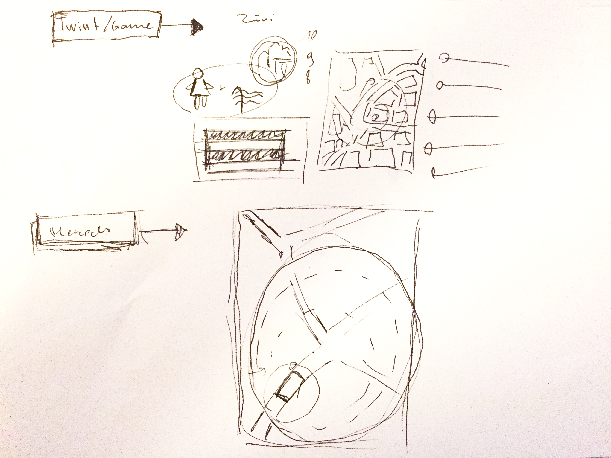
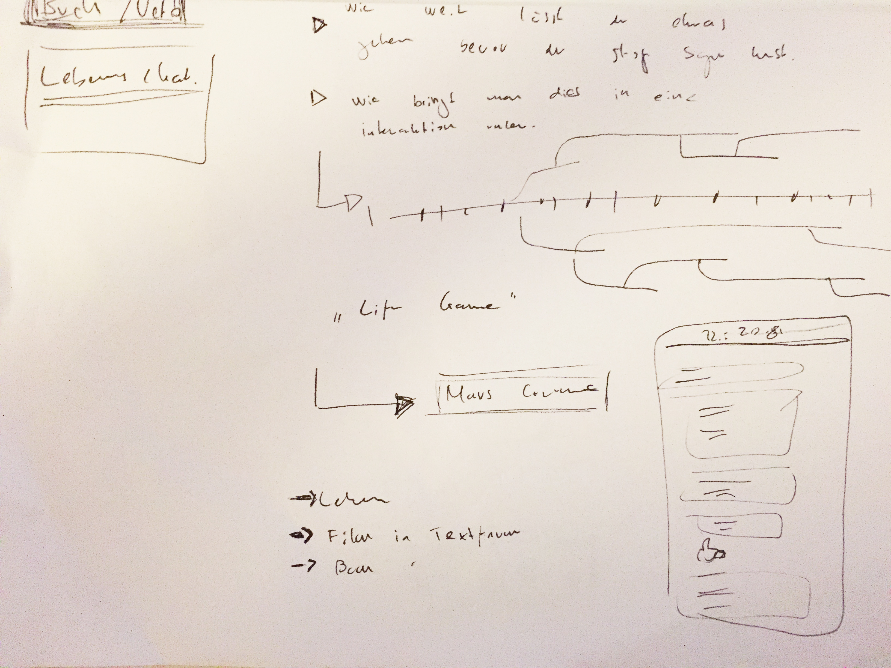

Nach einem Einführungsmorgen mit Alex Jenter und Shantala Hummler zum Thema Interaktion mit Text und Kontext starteten wir direkt mit der Konzeptionsphase. Während des Brainstormings merkten wir eindeutig, dass wir in Richtung Text-Game als App steuerten. 2 Ideen kristallisierten sich schnell aus dieser Phase hervor.
Bei dieser Idee griffen wir den aktuellen Trend der Battle-Royale Games auf und wollten so ein modernes Spiel mit Text, Bild und Icons schaffen. Ausgangspunkt ist die Karte der Stadt Zürich, auf der ein grosser Kreis abgebildet ist. Dieser Kreis stellt das Spielfeld dar, und wird mit jeder Stunde kleiner. Zu Beginn wird ein Hinweis gepostet, z.B. ein Icon einer Frau und eines Schwimmbades. Das kann nur die «Frauenbadi» sein. Ziel ist es nun diesen Ort zu finden aufgrund dieser spärlichen Information, geschicktes Kombinieren ist nun gefragt. Der Kreis wird immer kleiner und dient so zusätzlich als Hinweis. Findet man die richtige Stelle, wartet am Ziel ein QR-Code welcher bei einem erfolgreichen Scann mit der Handykamera Punkte garantiert. So entsteht ein Wettbewerb unter allen Teilnehmern, um die meisten Punkte auf dem Konto am ende des Monates.

Bei dieser Idee lassten wir uns von Basil Vogt inspirieren. Basil zeigte uns ein Büchlein bei welchem ein Text vorgelesen wird, es geht um ein Kind welches immer gewisse Dinge ausführt. Als Leser oder Zuhörer können wir nun intervenieren, geht das Kind zu weit oder nicht? Jeder Entscheid formt das Kind und beeinflusst die Entwicklung des Kindes. Dieser Ansatz ist darum spannend weil er sich sehr gut eignet eine Geschichte zu vermitteln. Anders als bei bekannten «line games» kann man nicht spezifisch Antworten, sondern nur eine Richtung vorgeben. Unsere Idee ist, das Leben eines Menschen passiv als «innere Stimme» zu erleben. Das ganze wird zeitgemäss als Nachrichtendienst-App dargestellt. Grundsätzlich könnte man das ganze Leben einfach durchlaufen lassen und sich einfach eine Geschichte über einen Menschen gönnen. Doch wer macht das schon, durch die Interaktionen die jederzeit möglich sind, formt das System einen Menschen mit seinen Stärken/Schwächen und Neigungen. Dies kann völlig ausarten oder in einem 0815 Leben in einem Hamsterrad enden.

Nach dem wir gestern unsere besten beiden Ideen der Klasse kurz vorgestellten haben wurde uns schnell klar dass die Idee «hidden hints» viel mehr Tiefe bietet, aus diesem Grund haben wir uns für dieses Projekt entschieden und begannen darauf hin direkt mit der Konzeption und Planung des Projekt. Nach einem spannendem Input von Kathrin Passig zum Thema generierte Texte und Layouts, verbrachten wir den grössten Teil des Tages unser Konzept zu erarbeiten.
Wir entschieden unser Projekt mittels Git auf GitHub umzusetzen. Da unsere Abgabe aus drei Teilen besteht, aus je einer Design-Landingpage, einer Konzept- und Dokumentationsseite, galt für uns die Herausforderung alle Teile einheitlich zu gestalten. Dieses Problem konnten wir dank Git rasch lösen. Auch die Projektplanung erfolgte ebenfalls über GitHub wo wir unsere Aufgaben in Form von «Issues» aufgelistet haben und dem enstprechendem Bearbeiter zuweisten. Um zu wissen wo wir in unserem Projekt stehen haben wir unsere Aufgaben in GitHub auf einem Kanbanboard verteilt.
Unser Project ist auf dem Foundation Framework und mittels Gulp unterstützendem Panini flat file compiler aufgebaut. Dies gab uns die Flexibilität, das Konzept sowie die Dokumentation, gemeinsam und gleichzeitig in der Gruppe über den cloudbasierten Service Hackmd.io in der Markdown-Language zu schreiben und in einem weiteren Schritt, mittels Panini und dem NPM-Packetmanager, in eine fertig formatierte HTML-Datei exportieren. Durch die in Panini integrierte, sehr einfach zu handhabende, Handlebar templating language, war das Erstellen von mehreren Seiten mit wiederholenden Elementen schnell vollbracht.
Nach einer ersten Konzept Runde, wagten wir uns heute ein erstes mal an das Design. Unser Hauptaugenmerk lag dabei ganz klar auf der Reader-Funktion. Der Text sollte im Vordergrund stehen und nicht die Interaktion. iBooks von Apple lieferte uns mit Ihrem schlichten Design eine gute Vorlage zur Orientierung. Am Nachmittag gab es schon die erste «Pitch-Runde» für unser Projekt an dem wir erste Design-Vorschläge und unser Konzept präsentierten. Das Feedback war für uns sehr hilfreich, folgende Punkte setzten wir auf unsere To-Do-List:
Den Morgen verbrachten wir damit das Feedback in das Design der App ein zu arbeiten. Am Nachmittag haben wir uns mit dem Erstellen der Animationen beschäftigt, sowie das Erstellen unserer Landingpage für die App. Wir wollten bis Donnerstagabend den grössten Teil, besonders Konzept und Landingpage fertig haben. So konnten wir sicherstellen dass wir genügend Zeit für die Präsentation haben werden.
Am Morgen haben wir noch letzte kleine Änderungen an unserem Konzept vorgenommen sowie die Landingpage aktualisiert, danach begannen wir die Präsentation vorzubereiten und uns die wichtigsten Merkmale raus zu schreiben damit wir nichts vergessen. Vor dem Mittag haben wir dann alles auf GitHub hochgeladen.